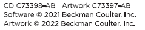

Software Version 3.7.0
Software version 3.7.0 release notes
Intended Use
For Internal Use Only - Sensitive data intended for use within BCI and normally shared with employees. There may be an occasional need to distribute this data outside the company with Management approval.
Software version 3.7.0 feature details
- Access 2 Removal of the System Check Event Log Message - Correction - Removing the “System Check” message in the Event Log screen.
- Access 2 3.7.0 Codesign certificate added to installer - Added requirement for codesign to Access 2 System Software Installation Requirements.
- Access software version 3.7.0 and the new Windows 8e console PC with the encrypted HDD together provide the features that make an individual system Privacy and Security compliant. The P&S features are as follows.
- The Whitelisting and Application Code Signing features ensure that only executable programs carrying the correct digital authenticity certificate are permitted to run. If an application lacks a valid certificate, Windows will not run it. Beckman developed programs like system software, re-image disks, and e-APFs will be codesigned and will not require any extra steps to run.
- The Windows Firewall will be enabled in the new PC image. The firewall provides protection from malicious software execution.
- The Encrypted HDD provides data security. The HDD has an encryption key that is tied to a unique matching key in the BIOS. If the HDD is separated from the motherboard, the saved data becomes indecipherable.
- Password entry is required when rebooting a P&S compliant PC. Enter the system password "Access2Admin" to start Windows.
Implementation
- Access 2 software version 3.7.0 will be released in MFG only and available for upgrade.
- Upgrading fielded instruments to P&S compliance is not a contract covered service activity. Customer requests for upgrades to P&S compliance should be advised to contact their Sales Representative.
Windows 10
- A Windows 10 version of software 3.7.0 released in March 2022.
- The software includes all the features listed above.
-
Only CDs released in March 2022 and after will load on Windows 10 PCs.
- Windows 10 software 3.7.0 CDs will have a CD part number C73398 printed below the CD Lot number.

- Prior versions of software 3.7.0 CDs have a CD part number C42383.
- Windows 10 software 3.7.0 CDs will have a CD part number C73398 printed below the CD Lot number.
- The only changes to the Windows 10 version of software 3.7.0 were to the embedded software installer application to make it compatible with Windows 10.